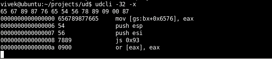

Udis86 is an easy-to-use minimalistic disassembler library (libudis86) for the x86 and AMD64 (x86-64) range of instruction set architectures. The primary intent of the design and development of udis86 is to aid software development projects that entail binary code analysis.
Latest Release: udis86-1.7.tar.gz
libudis86
- Full support for the x86 and x86-64 (AMD64) range of instruction set architectures.
- Full support for all AMD-V, INTEL-VMX, MMX, SSE, SSE2, SSE3, FPU(x87), and AMD 3Dnow! instructions.
- Supports 16bit, 32bit, and 64bit disassembly modes.
- Supports instruction meta-data using XML based decode tables.
- Generates output in AT&T or INTEL assembler language syntaxes.
- Supports flexbile input methods: File, Buffer, and Hooks.
- Thread-safe and Reentrant.
- Clean and very easy-to-use API.
udcli
A front-end incarnation of this library, udcli is a small command-line tool for your quick disassembly needs.

Help Needed
I am looking for developers who can help me with udis86 in the following areas,- Maintenance of the build system (especially for Windows)
- Maintenance of the x86optable (adding new instructions, meta-data, etc.)
- Testing udis86
- Writing extensions for dynamic languages.
Author
Udis86 is a creation of Vivek Mohan. You can reach me at vivek[at]sig9[dot]com. Please let me know if you are using udis86, have ideas for it, or would like to comment on it.
© 2006, 2007, 2008 Vivek Mohan